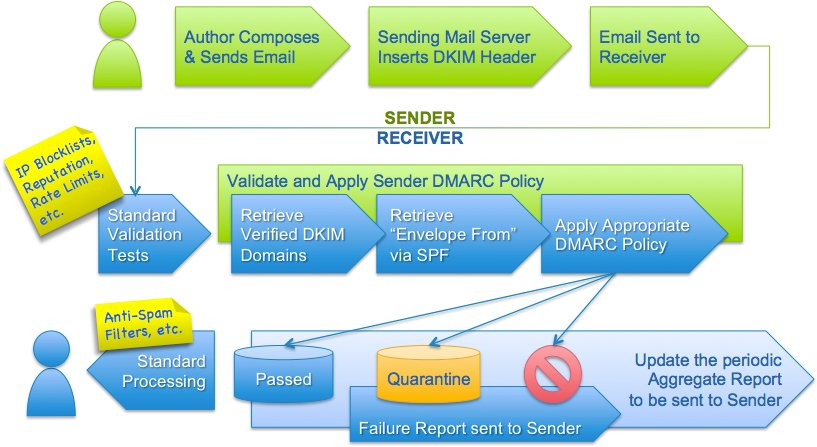

概述
此文章旨在把DMARC记录讲清楚，并且加深自己对这方面的理解和印象，学习过程中参考了以下文档：
dmarc官网
dmarc记录tag explanation
dmarc是什么
DMARC (Domain-based Message Authentication, Reporting, and Conformance) 是一个以部署SPF和DKIM为前提条件的防护策略。一般来说，部署了DMARC策略代表发件人已经完成了部署SPF和DKIM，DMARC可以告诉收件人，当spf记录和dkim验证失败的情况下，以什么方式处理。
工作原理
dmarc工作流一图流！可以看到DMARC policy框内包含了spf记录和dkim的验证。

dmarc记录长这个样子：
v=DMARC1; p=reject; rua=mailto:5b06a2badd9f1@report.com; ruf=mailto:5b06a2badd9f1@report.com; sp=none; fo=0;
dmarc语法
dmarc报告分析解读应该是一个商业方案，直接分析dmarc报告应该是个很困难的事情，我没办法直接看到dmarc报告，所以只能猜测了。下面我直接把tag语法描述贴了过来。 As you can see above, the above DMARC record has multiple components called DMARC tags separated by semicolons: v, p, rua, ruf, sp, and fo. Each tag has a value which defines a certain aspect of DMARC.
The following DMARC tags are available:
v is the DMARC version; it's always DMARC1;
p is the DMARC policy; it can be one of: none, quarantine, and reject, corresponding to the 3 main modes of DMARC;
rua specifies the URI of the mailbox to receive DMARC aggregate reports. It's required to request for DMARC aggregate reports;
ruf specifies the URI of the mailbox to receive DMARC failure/forensic reports. It's required to request for DMARC failure/forensic reports;
adkim (optional, default is "r".) specifies the DKIM Identidier Alignment mode. It can be either of:
r: relaxed mode
s: strict mode
aspf (optional, default is "r".) specifies the SPF Identidier Alignment mode. It can be either of:
r: relaxed mode
s: strict mode
fo (optional, default is "0") specifies failure/forensic reporting options. This tag is ignored if the ruf tag is not defined. The value of this tag is a colon-separated list of characters from '0', '1', 'd', and 's':
0: geneate a DMARC failure/forensic report if both SPF and DKIM fail to produce an aligned pass result;
1: geneate a DMARC failure/forensic report if either SPF or DKIM produces a result other than aligned pass;
d: geneate a DKIM failure report if the email's DKIM signature fails validation, regardless of the alignment;
s: geneate a SPF failure report if the email fails SPF evaluation, regardless of the alignment.
如何查询dmarc记录+实例分析
nslookup _dmarc.domain txt
dig _dmarc.domain txt